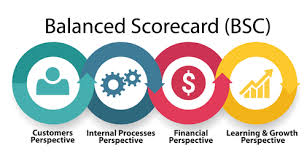

Voltar à página inicial
O que é Balanced Scorecard?
O Balanced Scorecard (BSC) é uma metodologia de gestão estratégica desenvolvida por Kaplan e Norton que traduz a missão e estratégia de uma organização em um conjunto abrangente de indicadores de desempenho que serve de base para um sistema de medição e gestão estratégica.

As Quatro Perspectivas
O BSC analisa a organização através de quatro perspectivas equilibradas:
1. Financeira
Como somos vistos pelos acionistas? Objetivos financeiros tradicionais como ROI, lucratividade e crescimento de receita.
2. Clientes
Como somos vistos pelos clientes? Métricas como satisfação do cliente, retenção e participação de mercado.
3. Processos Internos
Em que processos devemos excelência? Foco nos processos críticos que impactam clientes e acionistas.
4. Aprendizado e Crescimento
Como sustentaremos nossa capacidade de mudar e melhorar? Inclui capacitação, sistemas de informação e cultura organizacional.
Componentes Principais
1. Mapa Estratégico
Diagrama que mostra as relações de causa e efeito entre os objetivos estratégicos nas quatro perspectivas.
2. Objetivos Estratégicos
Declarações claras do que a organização pretende alcançar em cada perspectiva.
3. Indicadores (KPIs)
Métricas quantitativas para medir o progresso em direção aos objetivos.
4. Metas
Valores-alvo para os indicadores em um período específico.
5. Iniciativas
Projetos e ações estratégicas para alcançar os objetivos.
Benefícios da Implementação
- Alinhamento estratégico: Todos os níveis da organização compreendem a estratégia
- Comunicação clara: A estratégia é traduzida em termos operacionais
- Foco em resultados: Equilíbrio entre medidas financeiras e não-financeiras
- Gestão integrada: Alinhamento de iniciativas e alocação de recursos
- Melhoria contínua: Feedback e aprendizado estratégico
Aplicação em Governança de TI
Como adaptar o BSC para a área de TI:
Perspectivas Adaptadas para TI
- Contribuição Corporativa: Como a TI contribui para os objetivos organizacionais
- Orientacao ao Cliente: Satisfação dos usuários internos e externos
- Excelência Operacional: Eficiência dos processos de TI
- Futuro: Inovação e capacitação da equipe de TI
Exemplos de Indicadores para TI
- % de projetos de TI alinhados com estratégia de negócios
- Tempo médio de resolução de incidentes
- Nível de satisfação dos usuários com serviços de TI
- Retorno sobre investimento em projetos de TI
- % de orçamento de TI gasto em inovação
Como Implementar
Etapas para implementar o BSC em TI:
- Definir a estratégia de TI alinhada com o negócio
- Desenvolver o mapa estratégico para TI
- Selecionar indicadores-chave para cada perspectiva
- Estabelecer metas realistas
- Definir iniciativas estratégicas
- Implementar sistema de coleta e análise de dados
- Revisar e ajustar periodicamente
Voltar à página inicial